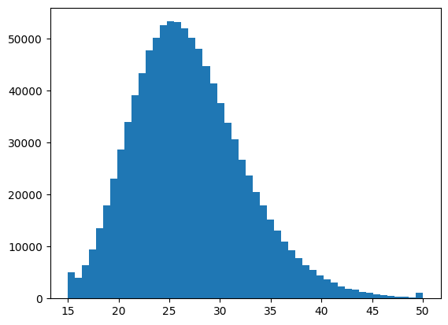

# Import libraries
import math
import numpy as np
from dataclasses import dataclass, field
from typing import List, Tuple
from pprint import pprint
import matplotlib.pyplot as plt
import seaborn as sns
import pandas as pdSynthetic Clinical Trial for Down’s Syndrome
Given measured device performace metrics (such as sensitivity, selectivity, storage and sample processing variations), estimate the ROC curve. In other given some device variation data, generate the AUC value that would be achieved by the test in clinic?
In other words, simulate an observational clinical trial for Down’s syndrome.
Inputs:
Device Caliberation Curve with Error Bars, Storage and processing variation data with Error Bars
Outputs:
ROC Curve and AUC valuePlan
Here is some sample code that we would eventually wish to write:
theoratical_max_roc, theoratical_max_auc = device_model()
roc, auc = device_model(input_file="./raw_data.csv")
plot_roc(roc)
print("AUC based on current device = ", auc)
dr = detection_rate(roc, fpr=0.05)
print("Detection rate achieved at 5% FPR is ", dr)Proposed csv format for Device Caliberation Curve
concentration,mean,std
-8.32,23.33,3.1
...Proposed csv format for Storage and Processing Variation data
marker,elapsed_days,mean,std
bhcg,8,23.33,3.1
bhcg,10,24.53,4.2
...Process
- ✅ Produce a model of population distribution for down syndrome
- Define probability distribution of samples
- Generate lots of samples based on the probability distribution (Age, b-hcg, papp-a, NT scan)
- Model and simulate storage and processing errors
- Model and simulate sensitivity and selectivity of our sensor
- ✅ Define a diagnostic algorithm, generate RUC curve and AUC value
Example 1. P(H) = 0.5, P(T) = 0.5 : Probability Distribution : Normal Distribution ( Average(X), SD(X) ) / Log Normal Distribution ( Average(log(X)), SD(log(X) ) 2. Random Sampling (take my distribution) -> then produce a random sample
Note
MoM: Multiples of Median is used as a gestational age normalized form of the raw values from different markers.
Modeling of population distribution for down syndrome
# Some helper lambdas to make switching bases easier to log
# Log base 10
# log = np.log10
# inv_log = lambda x: np.pow(10, x)
# Natural Logs
log = np.log
inv_log = np.exp@dataclass
class Marker:
"""This class is used to define a particular marker. Example, b-hCG."""
name: str # Name of the marker, example: b-hCG
median_mom_down: float # median MoM for down syndrome patients
median_mom_control: float # median MoM for control patients
log_sd_down: float = 0.0 # log of the sd of the marker's MoM values in Down Syndrome cases
log_sd_control: float = 0.0 # log of the sd of the marker's MoM values in Control cases@dataclass
class PopulationConfig:
"""
Maternal Age is Log Normally distributed.
"""
maternal_age_mean: float = 27.0 # Mean/Average of maternal age in years
maternal_age_sd: float = 5.5 # SD of maternal age in years
down_syndrome_prevalence: float = 1/700 # Prevalence of Down syndrome in the population# Create the configuration for Population with default values
pop_config = PopulationConfig()
pprint(pop_config)PopulationConfig(maternal_age_mean=27.0,
maternal_age_sd=5.5,
down_syndrome_prevalence=0.0014285714285714286)# Define the list of markers
markers: list[Marker] = [
Marker(name="Free B-hCG", median_mom_down=1.70, median_mom_control=1.01, log_sd_down=0.28, log_sd_control=0.27),
Marker(name="PAPP-A", median_mom_down=0.49, median_mom_control=1.00, log_sd_down=0.31, log_sd_control=0.25),
Marker(name="NT", median_mom_down=1.74, median_mom_control=1.01, log_sd_down=0.23, log_sd_control=0.13),
]
markers[Marker(name='Free B-hCG', median_mom_down=1.7, median_mom_control=1.01, log_sd_down=0.28, log_sd_control=0.27),
Marker(name='PAPP-A', median_mom_down=0.49, median_mom_control=1.0, log_sd_down=0.31, log_sd_control=0.25),
Marker(name='NT', median_mom_down=1.74, median_mom_control=1.01, log_sd_down=0.23, log_sd_control=0.13)]Generate lots of samples based on the probability distribution
sample_size: int = 1_000_000 # Number of samples to be generated from the distribution# If needed, we can make make the random functions behave the same every time by choosing a seed value
np.random.seed(42)# Randomly (normally) assign down syndrome to patients based on down syndrome prevalence (usually 1/700)
has_down = np.random.random(sample_size) < pop_config.down_syndrome_prevalence
has_downarray([False, False, False, ..., False, False, False])sampled_prevalence = (np.sum(has_down) / sample_size)
print(f"We get the prevalence of {sampled_prevalence*100:.2f}% which is similar to the expected value of {1/7:.2f}%")
assert np.allclose(sampled_prevalence, pop_config.down_syndrome_prevalence, atol=1/2000), "Sampled prevalence should be similar to expected prevalence"We get the prevalence of 0.14% which is similar to the expected value of 0.14%min_max = lambda v, tol: ((v - tol) * 100, (v + tol) * 100)
min_max(0.0014, 1/2000)(0.09, 0.19)Let X be a random variable with a log normal distribution \(N(\mu_X, \sigma^2_X\)). Then the \(ln(X)\) has the mean \(\mu\) and variance \(\sigma^2\).
\[ \begin{align} \mu &= ln({\frac{\mu^2_X}{\sqrt{\mu^2_X + \sigma^2_X}}}) \\ \sigma^2 &= ln(1 + \frac{\sigma^2_X}{\mu^2_X}) \end{align} \]
mu = log(pop_config.maternal_age_mean**2 / (np.sqrt(pop_config.maternal_age_mean**2 + pop_config.maternal_age_sd**2)))
sig2 = log(1 + (pop_config.maternal_age_sd ** 2 / pop_config.maternal_age_mean ** 2))
sig = np.sqrt(sig2)
log_maternal_ages = np.random.normal(
mu,
sig,
sample_size
)
# maternal_ages = np.random.normal(
# pop_config.maternal_age_mean,
# pop_config.maternal_age_sd,
# sample_size
# )
min_age, max_age = 15, 50
log_maternal_ages = np.clip(log_maternal_ages, np.log(min_age), np.log(max_age))
# np.clip(maternal_ages, min_age, max_age, out=maternal_ages)
print(
mu, sig
)3.275508180045729 0.20163673255932293def summary_stats(data: np.ndarray):
print(f"X ~ N(μ, σ^2): N({np.mean(data):.4f}, {np.std(data):.4f})")
print(f"Range: {np.min(data):.4f} ≤ X ≤ {np.max(data):.4f}")
print(f"median (M): {np.median(data):.4f}\n")inverse of log is exponential
maternal_age = np.exp(log_maternal_ages)
# maternal_age = np.clip(inv_log(log_maternal_ages), 15, 50)
# print(maternal_age)
plt.hist(maternal_age, bins=50)(array([ 4977., 3983., 6428., 9447., 13570., 17967., 23008., 28621.,
33974., 39115., 43345., 47708., 50206., 52588., 53289., 53121.,
52011., 50169., 48005., 44773., 41435., 37650., 33731., 30576.,
26718., 23731., 20526., 17862., 15216., 13019., 10906., 9264.,
7713., 6455., 5467., 4436., 3617., 3026., 2345., 1889.,
1674., 1268., 1054., 826., 658., 540., 404., 376.,
267., 1046.]),
array([15. , 15.7, 16.4, 17.1, 17.8, 18.5, 19.2, 19.9, 20.6, 21.3, 22. ,
22.7, 23.4, 24.1, 24.8, 25.5, 26.2, 26.9, 27.6, 28.3, 29. , 29.7,
30.4, 31.1, 31.8, 32.5, 33.2, 33.9, 34.6, 35.3, 36. , 36.7, 37.4,
38.1, 38.8, 39.5, 40.2, 40.9, 41.6, 42.3, 43. , 43.7, 44.4, 45.1,
45.8, 46.5, 47.2, 47.9, 48.6, 49.3, 50. ]),
<BarContainer object of 50 artists>)
summary_stats(log_maternal_ages)
# summary_stats(np.exp(log_maternal_ages))
summary_stats(inv_log(log_maternal_ages))X ~ N(μ, σ^2): N(3.2752, 0.2013)
Range: 2.7081 ≤ X ≤ 3.9120
median (M): 3.2752
X ~ N(μ, σ^2): N(26.9903, 5.4890)
Range: 15.0000 ≤ X ≤ 50.0000
median (M): 26.4473
Log normal distribution is defined as: \[ Y = ln(X), Y \sim N(\mu, \sigma) \]
In other words, where the log of the random variable Y is normally distributed.
For a log normally distributed random variable X. The median for X is just the exponential of its mean. \[ M = e^\mu => ln(M) = \mu \]
# Example
avg = log(0.49)
avgnp.float64(-0.7133498878774648)# Calculate mean of log10 values for all markers for both down's samples and healthy samples
mean_down = log([m.median_mom_down for m in markers]) # Mean for all markers for down's patients
# For example:
# Median MoM value of Papp-a for Down's is 0.49
# Given the above relationship between mean and median for a log-normally distributed variable,
# we can state that the Mean of Papp-a MoM values for Down's is log10(0.49) = -0.31
mean_control = log([m.median_mom_control for m in markers]) # Mean for all markers for healthy patients
mean_down, mean_control(array([ 0.53062825, -0.71334989, 0.55388511]),
array([0.00995033, 0. , 0.00995033]))Covariance Matrices
Assuming that \(X_i\) for all \(i=0...n\) are independent random variables, the \(Cov(X_i, Y_j) = 0\) and hence we get the following diagnol form containing only the variances.
\[ Cov(X, X) = \begin{bmatrix} Var(X_1) & 0 & 0\\ 0 & Var(X_2) & 0\\ 0 & 0 & Var(X_3) \end{bmatrix} = \begin{bmatrix} \sigma^2(X_1) & 0 & 0\\ 0 & \sigma^2(X_2) & 0\\ 0 & 0 & \sigma^2(X_3) \end{bmatrix} \]
The covariance matrix is a diagonal matrix containing only the variances of each of the markers.
Concretely, \[ Cov(X, X) = \begin{bmatrix} Var(Pappa) & 0 & 0\\ 0 & Var(\beta hCG) & 0\\ 0 & 0 & Var(NT) \end{bmatrix} = \begin{bmatrix} \sigma^2(Pappa) & 0 & 0\\ 0 & \sigma^2(\beta hCG) & 0\\ 0 & 0 & \sigma^2(NT) \end{bmatrix} \]
variance_matrix_down = np.diag([m.log_sd_down**2 for m in markers])
variance_matrix_control = np.diag([m.log_sd_control**2 for m in markers])
variance_matrix_down, variance_matrix_control(array([[0.0784, 0. , 0. ],
[0. , 0.0961, 0. ],
[0. , 0. , 0.0529]]),
array([[0.0729, 0. , 0. ],
[0. , 0.0625, 0. ],
[0. , 0. , 0.0169]]))sd_matrix_down = np.sqrt(variance_matrix_down)
sd_matrix_control = np.sqrt(variance_matrix_control)
sd_matrix_down, sd_matrix_control(array([[0.28, 0. , 0. ],
[0. , 0.31, 0. ],
[0. , 0. , 0.23]]),
array([[0.27, 0. , 0. ],
[0. , 0.25, 0. ],
[0. , 0. , 0.13]]))sd_matrix_down.shape, variance_matrix_down.shape((3, 3), (3, 3))np.sqrt(0.0784)np.float64(0.27999999999999997)Correlation Matrices
[m.name for m in markers]['Free B-hCG', 'PAPP-A', 'NT']\[ \begin{bmatrix} Corr(\text{Free B-hCG, Free B-hCG}) & Corr(\text{Free B-hCG, PAPP-A}) & Corr(\text{Free B-hCG, NT}) \\ Corr(\text{PAPP-A, Free B-hCG}) & Corr(\text{PAPP-A, PAPP-A}) & Corr(\text{PAPP-A, NT}) \\ Corr(\text{NT, Free B-hCG}) & Corr(\text{NT, PAPP-A}) & Corr(\text{NT, NT}) \\ \end{bmatrix} \]
Note: Correlations of markers with NT is assumed to be zero as per the paper (table 3)
# Correlation between different markers for Down's samples
correlation_matrix_down = np.array(
[[1., 0.191, 0.],
[0.191, 1., 0.],
[0., 0., 1.]]
)# Correlation between different markers for Healthy samples
correlation_matrix_control = np.array(
[[1., 0.186, 0.],
[0.186, 1., 0.],
[0., 0., 1.]]
)Let Markers be denoted by \(M\), \[ Cov(M, M) = \sigma(M) Corr(M, M) \sigma(M) \]
# Covariance matrix of all markers for Down's patients
cov_down = sd_matrix_down @ correlation_matrix_down @ sd_matrix_down
cov_downarray([[0.0784 , 0.0165788, 0. ],
[0.0165788, 0.0961 , 0. ],
[0. , 0. , 0.0529 ]])# Covariance matrix of all markers for Healthy patients
cov_control = sd_matrix_control @ correlation_matrix_control @ sd_matrix_control
cov_controlarray([[0.0729 , 0.012555, 0. ],
[0.012555, 0.0625 , 0. ],
[0. , 0. , 0.0169 ]])Generate Marker Values for all patient samples
# Sample the marker values for each of the down's patients
log_marker_values_down = np.random.multivariate_normal(
mean_down, # Mean of all markers of all markers for Down's patients
cov_down, # Covariance matrix of all markers for Down's patients
np.sum(has_down) # We want to sample these marker values for ALL the down's samples only
)
log_marker_values_down.shape #, log_marker_values_down(1436, 3)# Sample the marker values for each of the healthy patients
log_marker_values_control = np.random.multivariate_normal(
mean_control, # Mean of all markers of all markers for healthy patients
cov_control, # Covariance matrix of all markers for Healthy patients
np.sum(~has_down) # We want to sample these marker values for ALL the healthy samples only
)
log_marker_values_control.shape #, log_marker_values_control(998564, 3)Now, lets put all the marker values together into a single big matrix
log_marker_values = np.zeros((sample_size, len(markers)))
log_marker_values.shape(1000000, 3)log_marker_values[has_down] = log_marker_values_down
log_marker_values[~has_down] = log_marker_values_control# log_marker_valuesConvert all the marker values from log(MoM) to MoM values
# marker_values = np.exp(log_marker_values)
marker_values = inv_log(log_marker_values)
# marker_valuesdef plot_scatters(df, markers):
fig, axes = plt.subplots(1, 3, figsize=(20, 6))
pairs = [('Free B-hCG', 'PAPP-A'), ('Free B-hCG', 'NT'), ('PAPP-A', 'NT')]
for i, (x, y) in enumerate(pairs):
# Plot healthy cases with low opacity
sns.scatterplot(data=df[~df['Down Syndrome']], x=x, y=y, color='cyan',
alpha=0.01, ax=axes[i], label='Healthy')
# Plot Down syndrome cases with higher opacity
sns.scatterplot(data=df[df['Down Syndrome']], x=x, y=y, color='red',
alpha=0.8, ax=axes[i], label='Down Syndrome')
axes[i].set_title(f'{x} vs {y}')
axes[i].set_xlabel(f'{x} MoM')
axes[i].set_ylabel(f'{y} MoM')
plt.tight_layout()
plt.show()
def plot_violins(df, markers):
fig, axes = plt.subplots(1, 3, figsize=(20, 6))
axes = axes.flatten()
for i, column in enumerate(markers):# + ['Maternal Age']):
sns.violinplot(data=df, x='Down Syndrome', y=column, ax=axes[i])
axes[i].set_title(f'Violin Plot of {column}')
axes[i].set_ylabel('MoM' if column != 'Maternal Age' else 'Age')
plt.tight_layout()
plt.show()# Convert your data to a pandas DataFrame for easier plotting
df = pd.DataFrame(marker_values, columns=[m.name for m in markers])
df['Maternal Age'] = maternal_age
df['Down Syndrome'] = has_down
# Call the plotting functions
marker_names = [m.name for m in markers]
plot_scatters(df, marker_names)
# plot_violins(df, marker_names)def plot_2d_distributions(df, markers):
fig, axes = plt.subplots(1, 3, figsize=(20, 6))
pairs = [('Free B-hCG', 'PAPP-A'), ('Free B-hCG', 'NT'), ('PAPP-A', 'NT')]
for i, (x, y) in enumerate(pairs):
ax = axes[i]
# Separate data for healthy and Down syndrome cases
healthy_x = df.loc[~df['Down Syndrome'], x]
healthy_y = df.loc[~df['Down Syndrome'], y]
down_x = df.loc[df['Down Syndrome'], x]
down_y = df.loc[df['Down Syndrome'], y]
# Set the range for histogram
x_range = (0, df[x].quantile(0.99))
y_range = (0, df[y].quantile(0.99))
# Create 2D histograms
healthy_hist, xedges, yedges = np.histogram2d(healthy_x, healthy_y, bins=50, range=[x_range, y_range])
down_hist, _, _ = np.histogram2d(down_x, down_y, bins=[xedges, yedges])
# Normalize histograms
healthy_hist = healthy_hist / healthy_hist.max()
down_hist = down_hist / down_hist.max()
# Plot contours for healthy cases
ax.contour(
healthy_hist.T,
extent=[xedges[0], xedges[-1], yedges[0], yedges[-1]],
levels=3, colors='blue', alpha=0.1)
# Plot contours for Down syndrome cases
ax.contour(
down_hist.T,
extent=[xedges[0], xedges[-1], yedges[0], yedges[-1]],
levels=3, colors='red', alpha=0.2)
# Plot scatter for both groups
ax.scatter(healthy_x, healthy_y, c='lightgreen', s=1, alpha=0.05, label='Healthy')
ax.scatter(down_x, down_y, c='red', s=10, alpha=1, label='Down Syndrome')
ax.set_title(f'{x} vs {y}')
ax.set_xlabel(f'{x} MoM')
ax.set_ylabel(f'{y} MoM')
ax.legend()
# Set axis limits
ax.set_xlim(x_range)
ax.set_ylim(y_range)
plt.tight_layout()
plt.show()plot_2d_distributions(df, marker_names)import plotly.graph_objects as go
import plotly.io as pio
def create_interactive_plot(marker_values, maternal_age, is_down, markers, z_axis='maternal_age'):
# pio.renderers.default = "browser"
# Separate Down syndrome and control cases
down_indices = np.where(is_down)[0]
control_indices = np.where(~is_down)[0]
# Determine z-axis values
if z_axis == 'maternal_age':
z_values = maternal_age
z_axis_title = 'Maternal Age'
elif z_axis == 'NT':
z_values = marker_values[:, 2]
z_axis_title = markers[2].name
else:
raise ValueError("z_axis must be either 'maternal_age' or 'NT'")
# Create scatter plots for Down syndrome and control cases separately
scatter_down = go.Scatter3d(
x=marker_values[down_indices, 0],
y=marker_values[down_indices, 1],
z=z_values[down_indices],
mode='markers',
marker=dict(
size=5,
color='red',
symbol='square',
),
name='Down Syndrome',
text=[f"Age: {age:.1f}, {z_axis_title}: {z:.2f}, Down Syndrome: True"
for age, z in zip(maternal_age[down_indices], z_values[down_indices])],
hoverinfo="text"
)
scatter_control = go.Scatter3d(
x=marker_values[control_indices, 0],
y=marker_values[control_indices, 1],
z=z_values[control_indices],
mode='markers',
marker=dict(
size=3,
color='lightgreen',
opacity=0.01,
),
name='Control',
text=[f"Age: {age:.1f}, {z_axis_title}: {z:.2f}, Down Syndrome: False"
for age, z in zip(maternal_age[control_indices], z_values[control_indices])],
hoverinfo="text"
)
# Create the layout
layout = go.Layout(
scene=dict(
xaxis_title=markers[0].name,
yaxis_title=markers[1].name,
zaxis_title=z_axis_title,
),
title="Down Syndrome Screening Markers",
width=900,
height=700,
legend=dict(
yanchor="top",
y=0.99,
xanchor="left",
x=0.01
)
)
# Create the figure and show it
fig = go.Figure(data=[scatter_control, scatter_down], layout=layout)
fig.show()# create_interactive_plot(marker_values, maternal_age, has_down, markers, z_axis='maternal_age')# create_interactive_plot(marker_values, maternal_age, has_down, markers, z_axis='NT')Diagnostic algorithm, generate RUC curve and AUC value
- Based on likelihood estimation method as described in the paper
- Estimate age based risk
age_risk_prob = 1 / (1 + np.exp(16.2 - 0.286 * maternal_age)) # a-priori probability of down's syndrome based only on maternal age
# plt.scatter(maternal_age, age_risk_prob, c='red', s=3, alpha=0.1)
summary_stats(age_risk_prob)X ~ N(μ, σ^2): N(0.0011, 0.0058)
Range: 0.0000 ≤ X ≤ 0.1301
median (M): 0.0002
def maternal_age_risk(age: float) -> float:
"""Calculate risk of Down syndrome based on maternal age."""
return 1 / (1 + np.exp(16.2 - 0.286 * age))
print(f"{maternal_age_risk(30)*100:.2f}%")0.05%from scipy.stats import norm, multivariate_normal
from sklearn.metrics import roc_curve, auc
log_mom_values = np.log(marker_values)
min_val, max_val = np.min(log_mom_values, axis=0), np.max(log_mom_values, axis=0)
num_sections = 100
sections = np.linspace(min_val, max_val, num_sections+1)
lrs = np.ones(log_mom_values.shape[0])
for i in range(num_sections):
lower = sections[i]
upper = sections[i+1]
prob_control = multivariate_normal.cdf(upper, mean_control, cov_control) - multivariate_normal.cdf(lower, mean_control, cov_control)
prob_down = multivariate_normal.cdf(upper, mean_down, cov_down) - multivariate_normal.cdf(lower, mean_down, cov_down)
section_lr = prob_down / prob_control
in_section = np.all((log_mom_values >= lower) & (log_mom_values < upper), axis=1)
lrs[in_section] = section_lr
# age_risk = maternal_age_risk(maternal_age)
combined_risk = age_risk_prob * lrs
risks = combined_risk / (combined_risk + (1 - age_risk_prob))*100
# np.sum(risks[df["Down Syndrome"]] > 0.0014) / len(risks[df["Down Syndrome"]])# Calculate ROC and AUC
fpr, tpr, thresholds = roc_curve(has_down, lrs)
roc_auc = auc(fpr, tpr)
print(f"AUC: {roc_auc:.3f}")
# Find detection rate at 5% FPR
idx = np.argmin(np.abs(fpr - 0.05))
dr_at_5_fpr = tpr[idx]
print(f"Detection rate at 5% FPR: {dr_at_5_fpr:.2%}")AUC: 0.500
Detection rate at 5% FPR: 0.00%# # Plot ROC curve
# plt.figure(figsize=(8, 6))
# plt.plot(fpr, tpr, color='darkorange', lw=2, label=f'ROC curve (AUC = {roc_auc:.2f})')
# plt.plot([0, 1], [0, 1], color='navy', lw=2, linestyle='--')
# plt.xlim([0.0, 1.0])
# plt.ylim([0.0, 1.05])
# plt.xlabel('False Positive Rate')
# plt.ylabel('True Positive Rate')
# plt.title('Receiver Operating Characteristic (ROC) Curve')
# plt.legend(loc="lower right")
# plt.show()for i, marker in enumerate(markers):
print(f"{marker.name}:")
print(f" Control - Median: {marker.median_mom_control:.4f}, Log SD: {marker.log_sd_control:.4f}")
print(f" Down Syndrome - Median: {marker.median_mom_down:.4f}, Log SD: {marker.log_sd_down:.4f}")
# Check actual distributions in your data
control_values = marker_values[~has_down, i]
down_values = marker_values[has_down, i]
print(f" Actual Control - Median: {np.median(control_values):.4f}, Log SD: {np.std(np.log10(control_values)):.4f}")
print(f" Actual Down - Median: {np.median(down_values):.4f}, Log SD: {np.std(np.log10(down_values)):.4f}")
print()Free B-hCG:
Control - Median: 1.0100, Log SD: 0.2700
Down Syndrome - Median: 1.7000, Log SD: 0.2800
Actual Control - Median: 1.0100, Log SD: 0.1173
Actual Down - Median: 1.7095, Log SD: 0.1214
PAPP-A:
Control - Median: 1.0000, Log SD: 0.2500
Down Syndrome - Median: 0.4900, Log SD: 0.3100
Actual Control - Median: 0.9998, Log SD: 0.1086
Actual Down - Median: 0.4914, Log SD: 0.1406
NT:
Control - Median: 1.0100, Log SD: 0.1300
Down Syndrome - Median: 1.7400, Log SD: 0.2300
Actual Control - Median: 1.0102, Log SD: 0.0564
Actual Down - Median: 1.7403, Log SD: 0.0992
def simple_lr(mom_values, markers):
log_mom_values = np.log10(mom_values)
lrs = np.ones(mom_values.shape[0])
for i, marker in enumerate(markers):
mean_control = np.log10(marker.median_mom_control)
mean_down = np.log10(marker.median_mom_down)
pdf_control = norm.pdf(log_mom_values[:, i], mean_control, marker.log_sd_control)
pdf_down = norm.pdf(log_mom_values[:, i], mean_down, marker.log_sd_down)
lrs *= pdf_down / pdf_control
return lrs
# Test this simple LR
simple_risks = simple_lr(marker_values, markers)
fpr, tpr, _ = roc_curve(has_down, simple_risks)
simple_auc = auc(fpr, tpr)
print(f"AUC with simple LR: {simple_auc:.3f}")AUC with simple LR: 0.999plt.figure(figsize=(10, 6))
plt.hist(np.log10(simple_risks[~has_down]), bins=50, alpha=0.3, color="green", label='Control', density=True)
plt.hist(np.log10(simple_risks[has_down]), bins=50, alpha=0.6, color="red", label='Down Syndrome', density=True)
plt.xlabel('Log10 Likelihood Ratio')
plt.ylabel('Count')
plt.legend()
plt.title('Distribution of Log Likelihood Ratios')
plt.show()Model of the device
- For each MoM value of the patient, generate the raw value that would be measured by the device (example: ng/ml)
- Calculate median based on our device generated raw value
- Estimate MoM values based on our device’s raw values and gestational age dependent median values